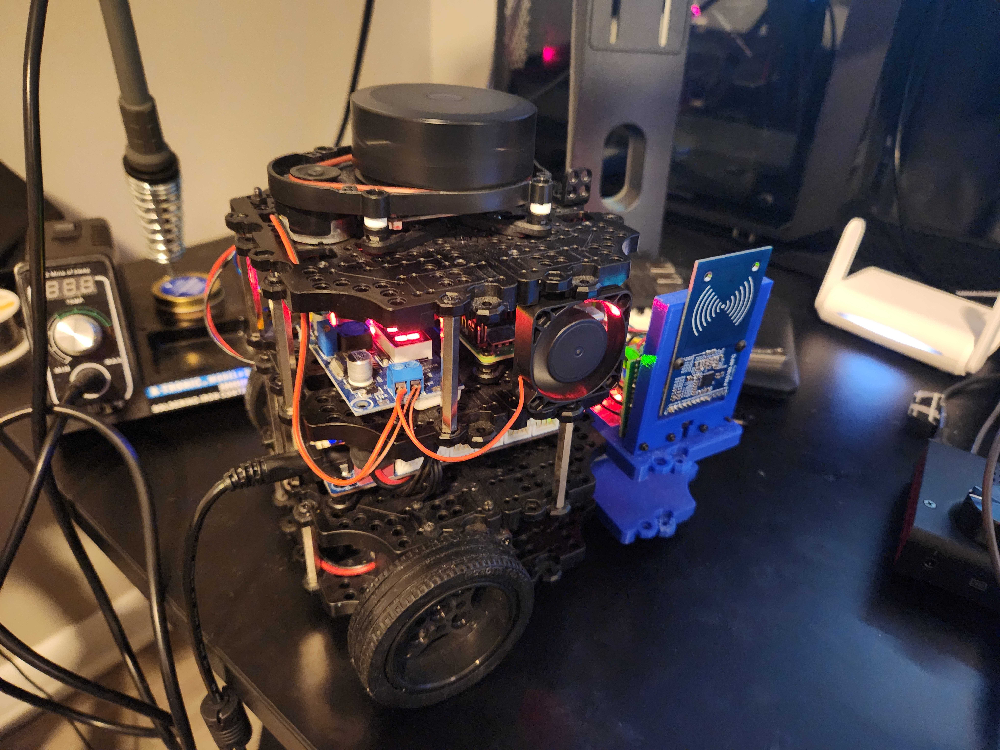

All Blog Posts
Landmarks
November 19, 2024
Today’s Summary:
Today I implemented an rfid_landmark node that would publish the transform from the map frame to the PN5180 RFID reader’s frame for rfid detection events. As you can see in the video below, there is a lot of tolerance for that detection, and so the landmark moves with the robot a bit. In addition, you can see that the landmark is preexisting at the beginning of the video but rather than localizing the robot, the detection frame moves itself. This will be addressed soon. Immediate objectives are in the full post.
Cool Down / Integration
November 16, 2024
Today’s Summary:
I set up a spare Raspberry Pi 4B+ as a Docker image registry server, configured to run automatically on power-up and accessible over my home Wi-Fi. Additionally, I reinstalled the fan I pilfered from the Pi case I am now using for docker and connected a 12V fan to the buck converter used to power the Arduino. Finally, I integrated my custom RFID publishing package into the turtlebot3_bringup_custom package. This package processes serial data from the RFID assembly and publishes detected IDs to the /rfid topic.

Containerization
October 27, 2024
This past weekend, I was able to transfer all of the basic code on the turtlebot into a docker container. From there I confirmed the ability to access the relevant topics on my desktop pc on the same network (using rviz to visualize my custom urdf) and to teleop the robot as well.
I have also started to do my development inside of a vscode dev container. This allows me to easily contain all of my dependencies and maintain operation regardless of device used. I plan to eventually experiment with using this on a steam deck running linux.
Project Goals V1.0
October 23, 2024
Current Project Goals
- [COMPLETED] Containerize Turtlebot3_bringup and RFID capture code
- Allow for easier development with docker images saved on server registry
- [IN PROGRESS] Containerize rtabmap in VSCode dev container for easier development
- By doing this, I’ll have a backup image / baseline to work off of.
- [COMPLETED] Create node to output RFID detection events as landmarks
- Tie the RFID tag ID to the location transform from the map frame at the instant of detection
- [IN PROGRESS] Integrate RFID detection events into rtabmap as landmarks
- Save detections with the map and use them for relocalization

First Project Update
October 22, 2024
I have recently decided to develop a project tracking section for my own personal documentation but also as a cool way to share my work. I will update this periodically with major milestones.